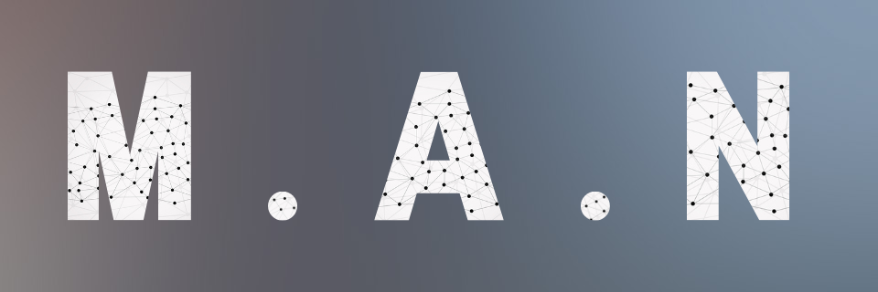

About

Hello, I am Muhammad Niazi, an enthusiastic Full Stack Developer, Solutions Engineer, and NCache Expert hailing from the vibrant city of Islamabad, Pakistan. With a deep-rooted passion for technology and an unyielding desire to unravel complex challenges, I have carved a rewarding journey in the world of software development.
My professional journey comprises of multiple ranks with the current being of a Senior Software Engineer at XGrid, Pakistan, where I assumed the role of a Full Stack Developer. During my tenure, I wholeheartedly contributed my skills and expertise to the team, leading the successful deployment of 2 test projects and 1 live project within the first six months of joining. My dedication to excellence had already been evident in my active involvement with the Quality Assurance (QA) team, ensuring seamless project transitions amid evolving requirements. I also took the opportunity to share my knowledge and experiences on the growing AI culture through the company's public podcast program, aiming to educate and inspire the wider community.
In my previous role as a Solutions Engineer at Alachisoft (Diya Technologies), Pakistan, I took my passion for technology to the next level. Collaborating closely with engineers and developers, I worked relentlessly to devise creative solutions that addressed customers' unique needs. One of my notable contributions was engineering the ".NET Lucene" solution, which served as a powerful backing source for distributed data indexing. I also designed an innovative "Entry Processor," facilitating a distributed cache with partial update functionality, which significantly enhanced system efficiency. Moreover, I developed an automated downtime prevention script that proved to be a game-changer in mitigating potential crises swiftly and effectively.
A voracious learner at heart, I am continuously exploring new technologies to augment my skill set. My expertise spans across various domains, including Microsoft Dynamics NAV, TypeScript, Angular, JavaScript, SQL, Docker, and more. I possess a keen understanding of Process Automation, SignaIR, Python, .NET Lucene, ASP.NET, PWSH Scripting, R, .NET Framework/Core, Visual Studio, Docker Desktop, NCache, Selenium, PowerShell, Linux, and Microsoft SQL Server.
In addition to my professional pursuits, I embarked on a rewarding freelancing journey, honing my skills further and expanding my horizons. My freelance projects ranged from creating bespoke websites and mobile app designs, fueled by my expertise in Figma for crafting custom UI/UX visuals, to undertaking web scraping and data cleaning initiatives for ML data processing. I also collaborated closely with customers and development teams, ensuring top-notch product quality and seamless project execution.
Beyond my technical prowess, I hold a Master's degree in Information Technology (Professional) from the esteemed Burwood Campus in Melbourne, Australia. This academic pursuit equipped me with a strong foundation in the latest trends and best practices in the IT realm, further fueling my dedication to continuous learning and growth.
As an individual who thrives in challenging environments, I welcome opportunities that push the boundaries of my knowledge and skills. My goal is not just to solve problems but to create transformative solutions that make a meaningful impact on businesses and individuals alike. I am always open to collaborations and networking opportunities to share ideas and contribute to cutting-edge projects. Feel free to connect with me via options shared below or drop me a line at reach.muhammadniazi@outlook.com.au. Let's embark on a journey of innovation and excellence together!